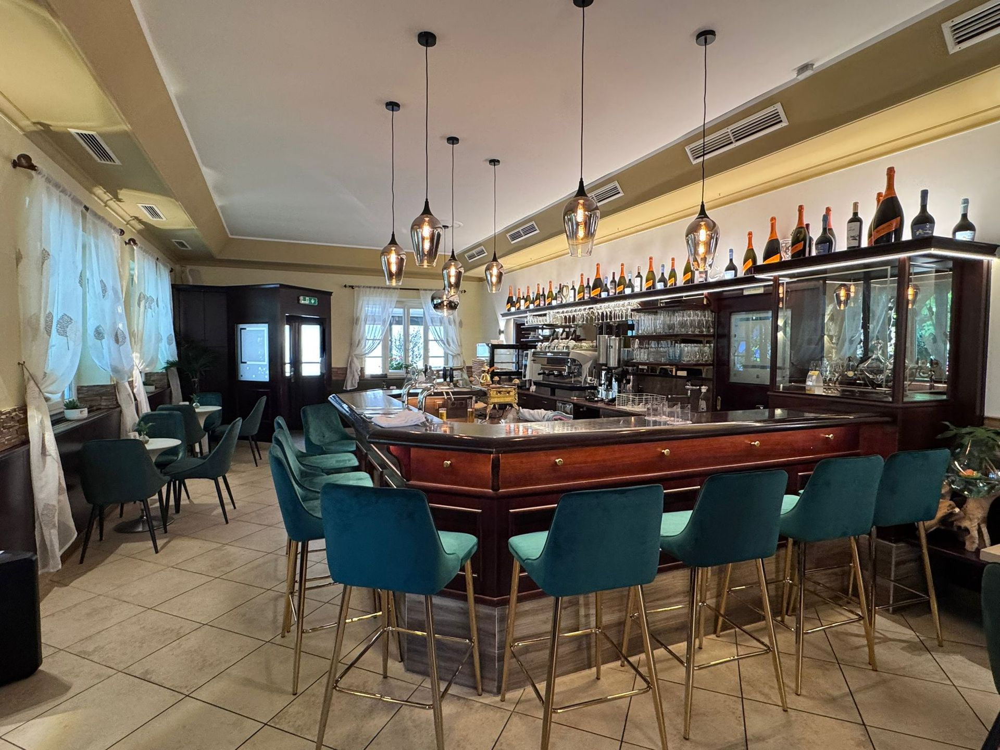

NEUE LOCATION
Nahe der Seegrotte
2371 Hinterbrühl · Hauptstraße 16
Café Weiss Hinterbrühl – Restaurant & Cafehouse
Mehr Plätze, mehr Natur und ganztägige französisch-mediterrane Küche nahe der Seegrotte. Vom ausgiebigen Frühstück über unser beliebtes Mittagsmenü (Di–Fr) bis zum romantischen Dinner am Abend.
- Frühstück, Brunch, Warme Küche, Pasta, Steaks & Fisch
- Dienstag – Freitag (11:00–15:00): 2-Gänge € 10,90 · 3-Gänge € 14,90
- Eleganter Kronleuchter-Salon für Hochzeiten, Taufen & Feiern
Öffnungszeiten:
Montag – Sonntag: 08:00 – 20:00 Uhr (Kein Ruhetag)
Adresse & Tel:
Hauptstraße 16, 2371 Hinterbrühl · +43 660 9840707